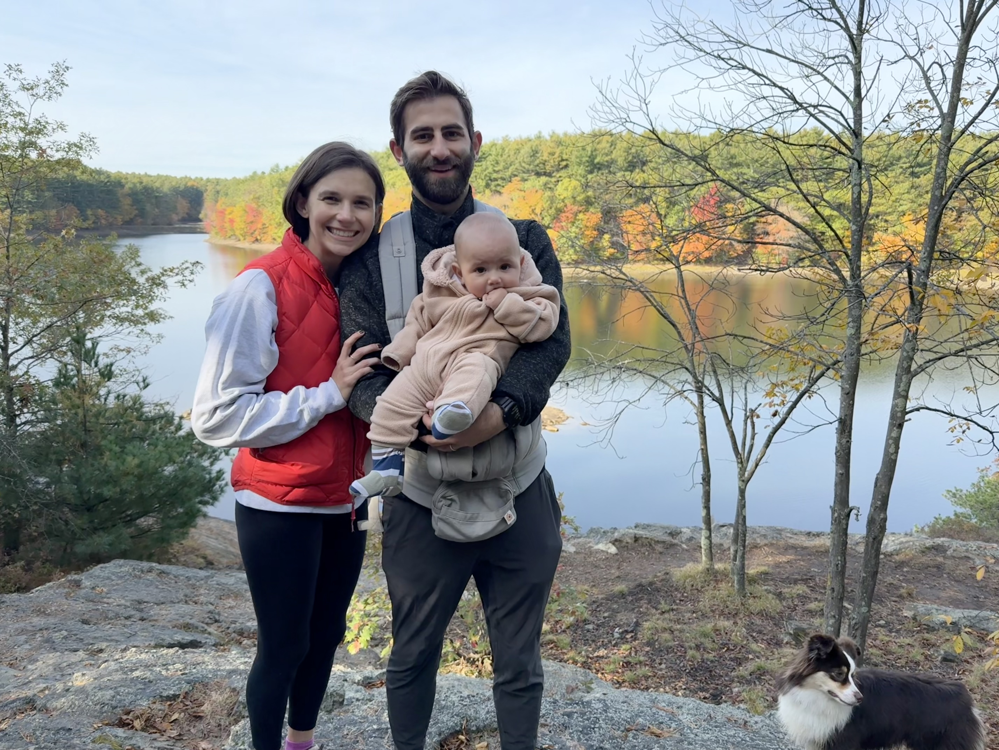
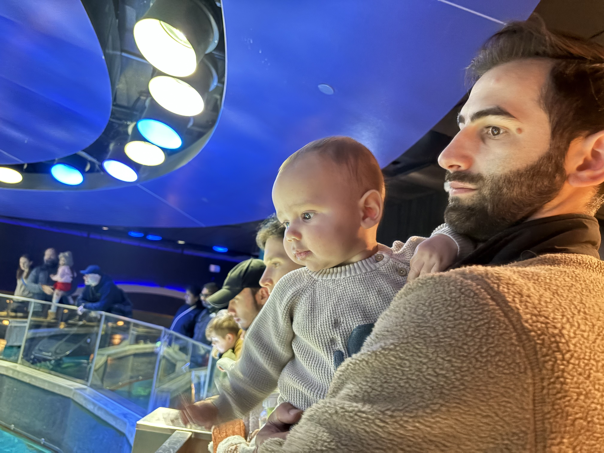
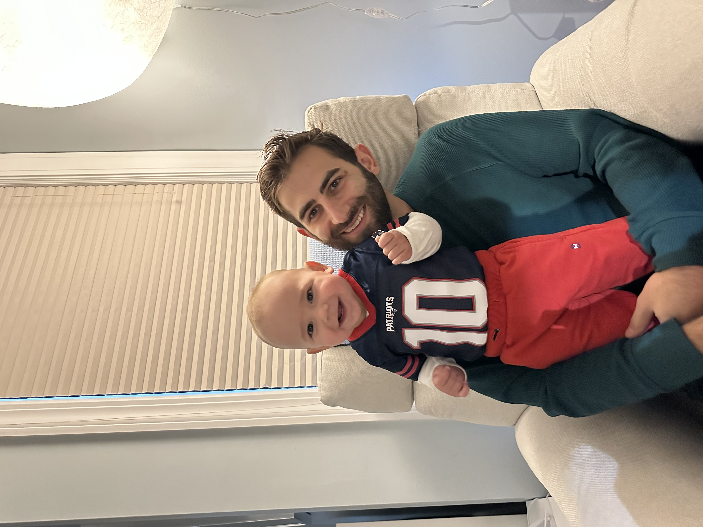
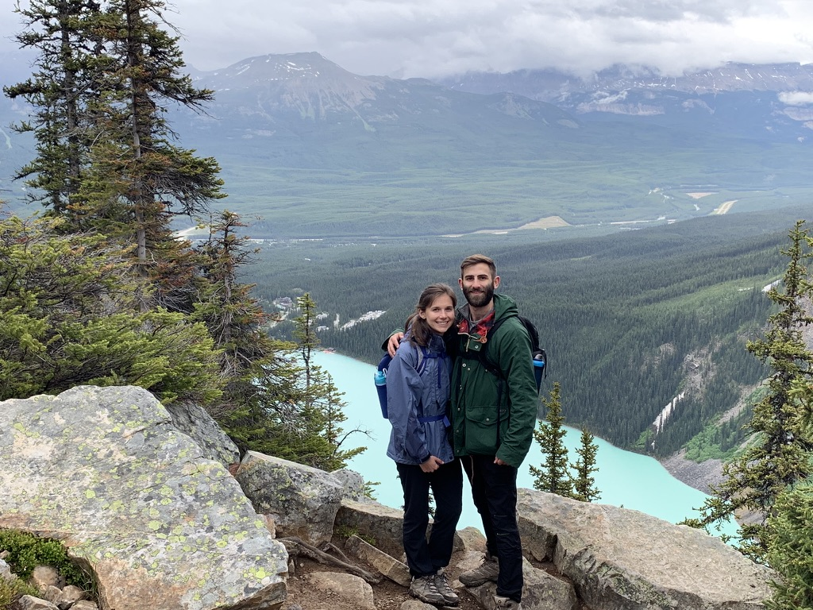
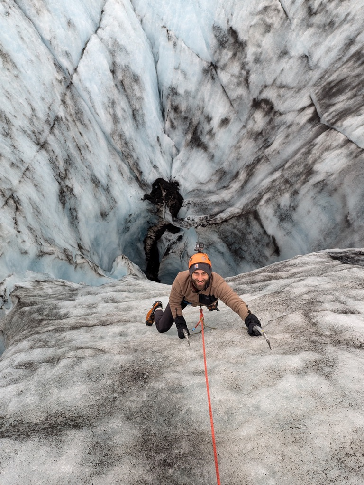
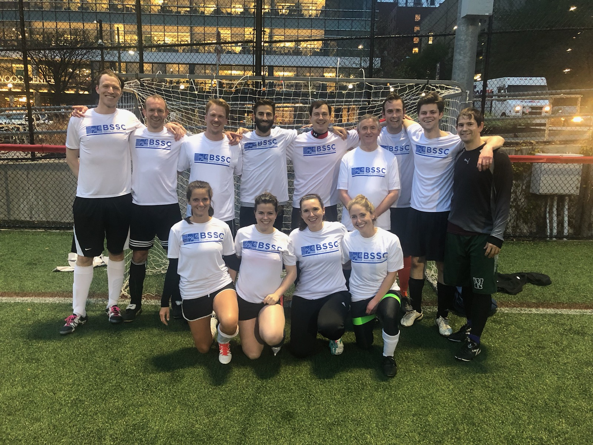

Outside of Work
Outside academic medicine, I value time with my son and my dog. Long-term personal interests include chess, yoga, hiking, soccer, and reading. Recent books and reading activity are available on Goodreads.
External Links
Photos





